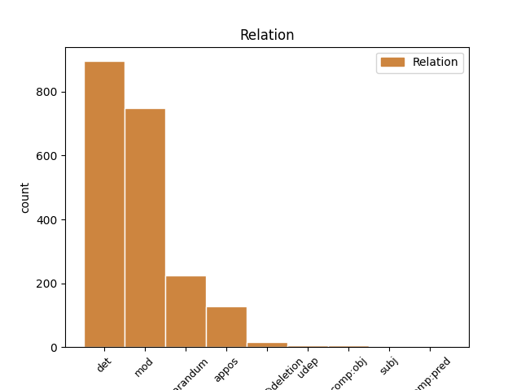
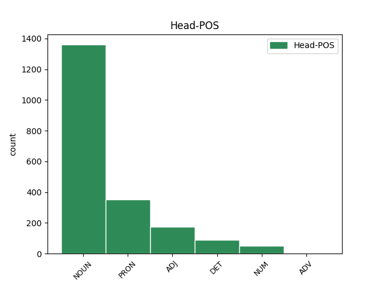
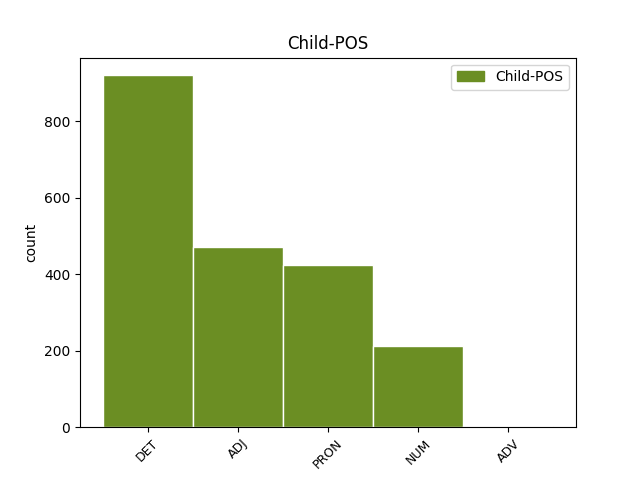

Distribution of features within this leaf



Agreement Rules sorted by frequency.
- When the dependent token is the determiner(det) of the head token, and the dependent token is DET.
1 det _ _ _ _ 0 _ _ _
2 var _ _ _ _ 0 _ _ _
3 ikkje _ _ _ _ 0 _ _ _
4 store _ _ _ _ 0 _ _ _
5 stor- _ _ _ _ 0 _ _ _
6 greia _ _ _ _ 0 _ _ _
7 det _ _ _ _ 0 _ _ _
8 ser _ _ _ _ 0 _ _ _
9 du _ _ _ _ 0 _ _ _
10 # _ _ _ _ 0 _ _ _
11 den den DET _ Gender=Fem|Number=Sing|PronType=Dem 12 det _ _
12 tida tid NOUN _ Definite=Def|Gender=Fem|Number=Sing 0 _ _ _
13 # _ _ _ _ 0 _ _ _
14 nei _ _ _ _ 0 _ _ _
15 # _ _ _ _ 0 _ _ _
16 det _ _ _ _ 0 _ _ _
17 var _ _ _ _ 0 _ _ _
18 det _ _ _ _ 0 _ _ _
19 ikkje _ _ _ _ 0 _ _ _
20 det _ _ _ _ 0 _ _ _
21 var _ _ _ _ 0 _ _ _
22 så _ _ _ _ 0 _ _ _
23 ein _ _ _ _ 0 _ _ _
24 # _ _ _ _ 0 _ _ _
25 å _ _ _ _ 0 _ _ _
26 ja _ _ _ _ 0 _ _ _
27 # _ _ _ _ 0 _ _ _
28 vart _ _ _ _ 0 _ _ _
29 vel _ _ _ _ 0 _ _ _
30 ein _ _ _ _ 0 _ _ _
31 tjue _ _ _ _ 0 _ _ _
32 øre _ _ _ _ 0 _ _ _
33 eller _ _ _ _ 0 _ _ _
34 noko _ _ _ _ 0 _ _ _
35 . _ _ _ _ 0 _ _ _
1 så _ _ _ _ 0 _ _ _
2 det _ _ _ _ 0 _ _ _
3 var _ _ _ _ 0 _ _ _
4 ikkje _ _ _ _ 0 _ _ _
5 svære svær ADJ _ Definite=Def|Degree=Pos|Number=Sing 6 mod _ _
6 betalinga betaling NOUN _ Definite=Def|Gender=Fem|Number=Sing 0 _ _ _
7 # _ _ _ _ 0 _ _ _
8 var _ _ _ _ 0 _ _ _
9 ikkje _ _ _ _ 0 _ _ _
10 det _ _ _ _ 0 _ _ _
11 men _ _ _ _ 0 _ _ _
12 vi _ _ _ _ 0 _ _ _
13 # _ _ _ _ 0 _ _ _
14 ja _ _ _ _ 0 _ _ _
15 ## _ _ _ _ 0 _ _ _
16 det _ _ _ _ 0 _ _ _
17 var _ _ _ _ 0 _ _ _
18 det _ _ _ _ 0 _ _ _
19 ikkje _ _ _ _ 0 _ _ _
20 det _ _ _ _ 0 _ _ _
21 var _ _ _ _ 0 _ _ _
22 det _ _ _ _ 0 _ _ _
23 var _ _ _ _ 0 _ _ _
24 det _ _ _ _ 0 _ _ _
25 var _ _ _ _ 0 _ _ _
26 tre _ _ _ _ 0 _ _ _
27 h- _ _ _ _ 0 _ _ _
28 tre _ _ _ _ 0 _ _ _
29 kroner _ _ _ _ 0 _ _ _
30 det _ _ _ _ 0 _ _ _
31 . _ _ _ _ 0 _ _ _
1 så _ _ _ _ 0 _ _ _
2 det _ _ _ _ 0 _ _ _
3 var _ _ _ _ 0 _ _ _
4 ikkje _ _ _ _ 0 _ _ _
5 svære _ _ _ _ 0 _ _ _
6 betalinga _ _ _ _ 0 _ _ _
7 # _ _ _ _ 0 _ _ _
8 var _ _ _ _ 0 _ _ _
9 ikkje _ _ _ _ 0 _ _ _
10 det _ _ _ _ 0 _ _ _
11 men _ _ _ _ 0 _ _ _
12 vi _ _ _ _ 0 _ _ _
13 # _ _ _ _ 0 _ _ _
14 ja _ _ _ _ 0 _ _ _
15 ## _ _ _ _ 0 _ _ _
16 det _ _ _ _ 0 _ _ _
17 var _ _ _ _ 0 _ _ _
18 det _ _ _ _ 0 _ _ _
19 ikkje _ _ _ _ 0 _ _ _
20 det _ _ _ _ 0 _ _ _
21 var _ _ _ _ 0 _ _ _
22 det _ _ _ _ 0 _ _ _
23 var _ _ _ _ 0 _ _ _
24 det _ _ _ _ 0 _ _ _
25 var _ _ _ _ 0 _ _ _
26 tre _ _ _ _ 0 _ _ _
27 h- _ _ _ _ 0 _ _ _
28 tre tre NUM _ Number=Plur|NumType=Card 29 mod _ _
29 kroner krone NOUN _ Definite=Ind|Gender=Fem|Number=Plur 0 _ _ _
30 det _ _ _ _ 0 _ _ _
31 . _ _ _ _ 0 _ _ _
1 og _ _ _ _ 0 _ _ _
2 dei dei PRON _ Animacy=Hum|Case=Nom|Number=Plur|Person=3|PronType=Prs 3 reparandum _ _
3 dei dei PRON _ Animacy=Hum|Case=Nom|Number=Plur|Person=3|PronType=Prs 0 _ _ _
4 hadd- _ _ _ _ 0 _ _ _
5 og _ _ _ _ 0 _ _ _
6 da _ _ _ _ 0 _ _ _
7 var _ _ _ _ 0 _ _ _
8 det _ _ _ _ 0 _ _ _
9 oppi _ _ _ _ 0 _ _ _
10 ein _ _ _ _ 0 _ _ _
11 da _ _ _ _ 0 _ _ _
12 var _ _ _ _ 0 _ _ _
13 det _ _ _ _ 0 _ _ _
14 oppi _ _ _ _ 0 _ _ _
15 ein _ _ _ _ 0 _ _ _
16 ni _ _ _ _ 0 _ _ _
17 hundre _ _ _ _ 0 _ _ _
18 kilo _ _ _ _ 0 _ _ _
19 dei _ _ _ _ 0 _ _ _
20 hadde _ _ _ _ 0 _ _ _
21 # _ _ _ _ 0 _ _ _
22 ja _ _ _ _ 0 _ _ _
23 # _ _ _ _ 0 _ _ _
24 det _ _ _ _ 0 _ _ _
25 var _ _ _ _ 0 _ _ _
26 det _ _ _ _ 0 _ _ _
27 . _ _ _ _ 0 _ _ _
1 ja _ _ _ _ 0 _ _ _
2 # _ _ _ _ 0 _ _ _
3 eg _ _ _ _ 0 _ _ _
4 var _ _ _ _ 0 _ _ _
5 # _ _ _ _ 0 _ _ _
6 eg eg PRON _ Animacy=Hum|Case=Nom|Number=Sing|Person=1|PronType=Prs 0 _ _ _
7 var _ _ _ _ 0 _ _ _
8 mykje _ _ _ _ 0 _ _ _
9 i _ _ _ _ 0 _ _ _
10 tømmerskogen _ _ _ _ 0 _ _ _
11 om _ _ _ _ 0 _ _ _
12 vinteren _ _ _ _ 0 _ _ _
13 eg eg PRON _ Animacy=Hum|Case=Nom|Number=Sing|Person=1|PronType=Prs 6 appos _ _
14 # _ _ _ _ 0 _ _ _
15 ja _ _ _ _ 0 _ _ _
16 # _ _ _ _ 0 _ _ _
17 det _ _ _ _ 0 _ _ _
18 var _ _ _ _ 0 _ _ _
19 eg _ _ _ _ 0 _ _ _
20 ## _ _ _ _ 0 _ _ _
21 det _ _ _ _ 0 _ _ _
22 var _ _ _ _ 0 _ _ _
23 eg _ _ _ _ 0 _ _ _
24 ja _ _ _ _ 0 _ _ _
25 . _ _ _ _ 0 _ _ _
1 nei _ _ _ _ 0 _ _ _
2 det _ _ _ _ 0 _ _ _
3 gjorde _ _ _ _ 0 _ _ _
4 eg _ _ _ _ 0 _ _ _
5 ikkje _ _ _ _ 0 _ _ _
6 men _ _ _ _ 0 _ _ _
7 det _ _ _ _ 0 _ _ _
8 # _ _ _ _ 0 _ _ _
9 det _ _ _ _ 0 _ _ _
10 det _ _ _ _ 0 _ _ _
11 det _ _ _ _ 0 _ _ _
12 var _ _ _ _ 0 _ _ _
13 greitt _ _ _ _ 0 _ _ _
14 det _ _ _ _ 0 _ _ _
15 at _ _ _ _ 0 _ _ _
16 at _ _ _ _ 0 _ _ _
17 det _ _ _ _ 0 _ _ _
18 var _ _ _ _ 0 _ _ _
19 av _ _ _ _ 0 _ _ _
20 det _ _ _ _ 0 _ _ _
21 # _ _ _ _ 0 _ _ _
22 fingrane finger NOUN _ Definite=Def|Gender=Masc|Number=Plur 0 _ _ _
23 mine min PRON _ Number=Plur|Poss=Yes|PronType=Prs 22 mod _ _
24 vart _ _ _ _ 0 _ _ _
25 stive _ _ _ _ 0 _ _ _
26 ser _ _ _ _ 0 _ _ _
27 du _ _ _ _ 0 _ _ _
28 # _ _ _ _ 0 _ _ _
29 ja _ _ _ _ 0 _ _ _
30 # _ _ _ _ 0 _ _ _
31 det _ _ _ _ 0 _ _ _
32 vart _ _ _ _ 0 _ _ _
33 dei _ _ _ _ 0 _ _ _
34 . _ _ _ _ 0 _ _ _
1 det _ _ _ _ 0 _ _ _
2 der _ _ _ _ 0 _ _ _
3 kunne _ _ _ _ 0 _ _ _
4 gå _ _ _ _ 0 _ _ _
5 gale _ _ _ _ 0 _ _ _
6 da _ _ _ _ 0 _ _ _
7 # _ _ _ _ 0 _ _ _
8 nei _ _ _ _ 0 _ _ _
9 # _ _ _ _ 0 _ _ _
10 og _ _ _ _ 0 _ _ _
11 difor _ _ _ _ 0 _ _ _
12 var _ _ _ _ 0 _ _ _
13 det _ _ _ _ 0 _ _ _
14 om _ _ _ _ 0 _ _ _
15 å _ _ _ _ 0 _ _ _
16 gjere _ _ _ _ 0 _ _ _
17 å _ _ _ _ 0 _ _ _
18 så _ _ _ _ 0 _ _ _
19 ha _ _ _ _ 0 _ _ _
20 ha _ _ _ _ 0 _ _ _
21 ein ein DET _ Gender=Masc|Number=Sing|PronType=Art 22 reparandum _ _
22 ein ein DET _ Gender=Masc|Number=Sing|PronType=Art 0 _ _ _
23 god _ _ _ _ 0 _ _ _
24 hest _ _ _ _ 0 _ _ _
25 da _ _ _ _ 0 _ _ _
26 ser _ _ _ _ 0 _ _ _
27 du _ _ _ _ 0 _ _ _
28 # _ _ _ _ 0 _ _ _
29 ja _ _ _ _ 0 _ _ _
30 det _ _ _ _ 0 _ _ _
31 var _ _ _ _ 0 _ _ _
32 det _ _ _ _ 0 _ _ _
33 . _ _ _ _ 0 _ _ _
1 ja _ _ _ _ 0 _ _ _
2 # _ _ _ _ 0 _ _ _
3 han han PRON _ Case=Nom|Gender=Masc|Number=Sing|Person=3|PronType=Prs 4 det _ _
4 far far NOUN _ Definite=Ind|Gender=Masc|Number=Sing 0 _ _ _
5 kjøpte _ _ _ _ 0 _ _ _
6 mora _ _ _ _ 0 _ _ _
7 ## _ _ _ _ 0 _ _ _
8 til _ _ _ _ 0 _ _ _
9 ein _ _ _ _ 0 _ _ _
10 hest _ _ _ _ 0 _ _ _
11 e _ _ _ _ 0 _ _ _
12 vestanfor _ _ _ _ 0 _ _ _
13 han _ _ _ _ 0 _ _ _
14 # _ _ _ _ 0 _ _ _
15 ja _ _ _ _ 0 _ _ _
16 . _ _ _ _ 0 _ _ _
1 ja _ _ _ _ 0 _ _ _
2 # _ _ _ _ 0 _ _ _
3 var _ _ _ _ 0 _ _ _
4 snart _ _ _ _ 0 _ _ _
5 å _ _ _ _ 0 _ _ _
6 å _ _ _ _ 0 _ _ _
7 koke _ _ _ _ 0 _ _ _
8 havregrynet _ _ _ _ 0 _ _ _
9 litt _ _ _ _ 0 _ _ _
10 ser _ _ _ _ 0 _ _ _
11 du _ _ _ _ 0 _ _ _
12 # _ _ _ _ 0 _ _ _
13 ja _ _ _ _ 0 _ _ _
14 # _ _ _ _ 0 _ _ _
15 og _ _ _ _ 0 _ _ _
16 da _ _ _ _ 0 _ _ _
17 var _ _ _ _ 0 _ _ _
18 dei _ _ _ _ 0 _ _ _
19 etande _ _ _ _ 0 _ _ _
20 # _ _ _ _ 0 _ _ _
21 og _ _ _ _ 0 _ _ _
22 god god ADJ _ Definite=Ind|Degree=Pos|Number=Sing 23 reparandum _ _
23 god god ADJ _ Definite=Ind|Degree=Pos|Number=Sing 0 _ _ _
24 mat _ _ _ _ 0 _ _ _
25 var _ _ _ _ 0 _ _ _
26 det _ _ _ _ 0 _ _ _
27 # _ _ _ _ 0 _ _ _
28 ja _ _ _ _ 0 _ _ _
29 . _ _ _ _ 0 _ _ _
1 ja _ _ _ _ 0 _ _ _
2 det det PRON _ Gender=Neut|Number=Sing|Person=3|PronType=Prs 5 parataxis@deletion _ _
3 e _ _ _ _ 0 _ _ _
4 barken _ _ _ _ 0 _ _ _
5 det det PRON _ Gender=Neut|Number=Sing|Person=3|PronType=Prs 0 _ _ _
6 er _ _ _ _ 0 _ _ _
7 det _ _ _ _ 0 _ _ _
8 der _ _ _ _ 0 _ _ _
9 # _ _ _ _ 0 _ _ _
10 det _ _ _ _ 0 _ _ _
11 er _ _ _ _ 0 _ _ _
12 det _ _ _ _ 0 _ _ _
13 der _ _ _ _ 0 _ _ _
14 kalla _ _ _ _ 0 _ _ _
15 vi _ _ _ _ 0 _ _ _
16 for _ _ _ _ 0 _ _ _
17 « _ _ _ _ 0 _ _ _
18 barken _ _ _ _ 0 _ _ _
19 » _ _ _ _ 0 _ _ _
20 altså _ _ _ _ 0 _ _ _
21 . _ _ _ _ 0 _ _ _
1 så _ _ _ _ 0 _ _ _
2 det _ _ _ _ 0 _ _ _
3 var _ _ _ _ 0 _ _ _
4 ikkje _ _ _ _ 0 _ _ _
5 svære _ _ _ _ 0 _ _ _
6 betalinga _ _ _ _ 0 _ _ _
7 # _ _ _ _ 0 _ _ _
8 var _ _ _ _ 0 _ _ _
9 ikkje _ _ _ _ 0 _ _ _
10 det _ _ _ _ 0 _ _ _
11 men _ _ _ _ 0 _ _ _
12 vi _ _ _ _ 0 _ _ _
13 # _ _ _ _ 0 _ _ _
14 ja _ _ _ _ 0 _ _ _
15 ## _ _ _ _ 0 _ _ _
16 det _ _ _ _ 0 _ _ _
17 var _ _ _ _ 0 _ _ _
18 det _ _ _ _ 0 _ _ _
19 ikkje _ _ _ _ 0 _ _ _
20 det _ _ _ _ 0 _ _ _
21 var _ _ _ _ 0 _ _ _
22 det _ _ _ _ 0 _ _ _
23 var _ _ _ _ 0 _ _ _
24 det _ _ _ _ 0 _ _ _
25 var _ _ _ _ 0 _ _ _
26 tre tre NUM _ Number=Plur|NumType=Card 28 reparandum _ _
27 h- _ _ _ _ 0 _ _ _
28 tre tre NUM _ Number=Plur|NumType=Card 0 _ _ _
29 kroner _ _ _ _ 0 _ _ _
30 det _ _ _ _ 0 _ _ _
31 . _ _ _ _ 0 _ _ _
1 ja _ _ _ _ 0 _ _ _
2 og _ _ _ _ 0 _ _ _
3 de- _ _ _ _ 0 _ _ _
4 der _ _ _ _ 0 _ _ _
5 er _ _ _ _ 0 _ _ _
6 dei _ _ _ _ 0 _ _ _
7 einige _ _ _ _ 0 _ _ _
8 om _ _ _ _ 0 _ _ _
9 dei _ _ _ _ 0 _ _ _
10 kan _ _ _ _ 0 _ _ _
11 vere _ _ _ _ 0 _ _ _
12 ueinige _ _ _ _ 0 _ _ _
13 i _ _ _ _ 0 _ _ _
14 mange _ _ _ _ 0 _ _ _
15 andre _ _ _ _ 0 _ _ _
16 ting _ _ _ _ 0 _ _ _
17 så _ _ _ _ 0 _ _ _
18 er _ _ _ _ 0 _ _ _
19 dei _ _ _ _ 0 _ _ _
20 iallfall _ _ _ _ 0 _ _ _
21 # _ _ _ _ 0 _ _ _
22 det _ _ _ _ 0 _ _ _
23 er _ _ _ _ 0 _ _ _
24 dei dei PRON _ Animacy=Hum|Case=Nom|Number=Plur|Person=3|PronType=Prs 25 comp:obj _ _
25 einige einig ADJ _ Degree=Pos|Number=Plur 0 _ _ _
26 om _ _ _ _ 0 _ _ _
27 at _ _ _ _ 0 _ _ _
28 e _ _ _ _ 0 _ _ _
29 det _ _ _ _ 0 _ _ _
30 vil _ _ _ _ 0 _ _ _
31 ikkje _ _ _ _ 0 _ _ _
32 dei _ _ _ _ 0 _ _ _
33 vere _ _ _ _ 0 _ _ _
34 . _ _ _ _ 0 _ _ _
1 og _ _ _ _ 0 _ _ _
2 ja _ _ _ _ 0 _ _ _
3 da _ _ _ _ 0 _ _ _
4 vi _ _ _ _ 0 _ _ _
5 brukte _ _ _ _ 0 _ _ _
6 litt _ _ _ _ 0 _ _ _
7 av _ _ _ _ 0 _ _ _
8 det _ _ _ _ 0 _ _ _
9 # _ _ _ _ 0 _ _ _
10 men _ _ _ _ 0 _ _ _
11 ikkje _ _ _ _ 0 _ _ _
12 noko nokon DET _ Gender=Neut|Number=Sing|PronType=Ind 14 udep _ _
13 så _ _ _ _ 0 _ _ _
14 mykje mykje ADJ _ Definite=Ind|Degree=Pos|Gender=Neut|Number=Sing 0 _ _ _
15 # _ _ _ _ 0 _ _ _
16 nei _ _ _ _ 0 _ _ _
17 # _ _ _ _ 0 _ _ _
18 det _ _ _ _ 0 _ _ _
19 var _ _ _ _ 0 _ _ _
20 ikkje _ _ _ _ 0 _ _ _
21 noko _ _ _ _ 0 _ _ _
22 mykje _ _ _ _ 0 _ _ _
23 . _ _ _ _ 0 _ _ _
1 ja _ _ _ _ 0 _ _ _
2 ja _ _ _ _ 0 _ _ _
3 « _ _ _ _ 0 _ _ _
4 vugga _ _ _ _ 0 _ _ _
5 » _ _ _ _ 0 _ _ _
6 det _ _ _ _ 0 _ _ _
7 # _ _ _ _ 0 _ _ _
8 « _ _ _ _ 0 _ _ _
9 vugga _ _ _ _ 0 _ _ _
10 » _ _ _ _ 0 _ _ _
11 det _ _ _ _ 0 _ _ _
12 # _ _ _ _ 0 _ _ _
13 det _ _ _ _ 0 _ _ _
14 det _ _ _ _ 0 _ _ _
15 er _ _ _ _ 0 _ _ _
16 på _ _ _ _ 0 _ _ _
17 meir _ _ _ _ 0 _ _ _
18 i _ _ _ _ 0 _ _ _
19 s- _ _ _ _ 0 _ _ _
20 e _ _ _ _ 0 _ _ _
21 aristokratisk aristokratisk ADJ _ Definite=Ind|Degree=Pos|Gender=Neut|Number=Sing 0 _ _ _
22 det det PRON _ Gender=Neut|Number=Sing|Person=3|PronType=Prs 21 udep _ _
23 her _ _ _ _ 0 _ _ _
24 . _ _ _ _ 0 _ _ _
1 sa _ _ _ _ 0 _ _ _
2 dei _ _ _ _ 0 _ _ _
3 det _ _ _ _ 0 _ _ _
4 første første ADJ _ Definite=Ind|Degree=Pos|Gender=Neut|Number=Sing 0 _ _ _
5 eller _ _ _ _ 0 _ _ _
6 det _ _ _ _ 0 _ _ _
7 siste sist ADJ _ Definite=Def|Degree=Pos|Number=Sing 4 comp:pred _ _
8 ? _ _ _ _ 0 _ _ _
1 også _ _ _ _ 0 _ _ _
2 var _ _ _ _ 0 _ _ _
3 det _ _ _ _ 0 _ _ _
4 ei _ _ _ _ 0 _ _ _
5 dame _ _ _ _ 0 _ _ _
6 # _ _ _ _ 0 _ _ _
7 og _ _ _ _ 0 _ _ _
8 ein ein DET _ Gender=Masc|Number=Sing|PronType=Art 10 parataxis@deletion _ _
9 også _ _ _ _ 0 _ _ _
10 guten gut NOUN _ Definite=Def|Gender=Masc|Number=Sing 0 _ _ _
11 hennar _ _ _ _ 0 _ _ _
12 dei _ _ _ _ 0 _ _ _
13 var _ _ _ _ 0 _ _ _
14 sånne _ _ _ _ 0 _ _ _
15 passasjerar _ _ _ _ 0 _ _ _
16 skulle _ _ _ _ 0 _ _ _
17 nå _ _ _ _ 0 _ _ _
18 følge _ _ _ _ 0 _ _ _
19 med _ _ _ _ 0 _ _ _
20 oss _ _ _ _ 0 _ _ _
21 frå _ _ _ _ 0 _ _ _
22 # _ _ _ _ 0 _ _ _
23 frå _ _ _ _ 0 _ _ _
24 Tromsø _ _ _ _ 0 _ _ _
25 . _ _ _ _ 0 _ _ _
1 så _ _ _ _ 0 _ _ _
2 nå _ _ _ _ 0 _ _ _
3 # _ _ _ _ 0 _ _ _
4 blir _ _ _ _ 0 _ _ _
5 vel _ _ _ _ 0 _ _ _
6 den _ _ _ _ 0 _ _ _
7 dialekta _ _ _ _ 0 _ _ _
8 også _ _ _ _ 0 _ _ _
9 # _ _ _ _ 0 _ _ _
10 lik lik ADJ _ Definite=Ind|Degree=Pos|Number=Sing 0 _ _ _
11 den _ _ _ _ 0 _ _ _
12 andre annan DET _ Definite=Def|Degree=Pos|Number=Sing|PronType=Dem 10 comp:obj _ _
13 . _ _ _ _ 0 _ _ _
1 det _ _ _ _ 0 _ _ _
2 var _ _ _ _ 0 _ _ _
3 med _ _ _ _ 0 _ _ _
4 # _ _ _ _ 0 _ _ _
5 med _ _ _ _ 0 _ _ _
6 rettigheit _ _ _ _ 0 _ _ _
7 det _ _ _ _ 0 _ _ _
8 altså _ _ _ _ 0 _ _ _
9 sånt sånt ADV _ Case=Acc|Gender=Neut|Number=Sing|Person=3|PronType=Prs 10 mod _ _
10 det det PRON _ Gender=Neut|Number=Sing|Person=3|PronType=Prs 0 _ _ _
11 v- _ _ _ _ 0 _ _ _
12 men _ _ _ _ 0 _ _ _
13 det _ _ _ _ 0 _ _ _
14 måtte _ _ _ _ 0 _ _ _
15 det _ _ _ _ 0 _ _ _
16 ikkje _ _ _ _ 0 _ _ _
17 tenkast _ _ _ _ 0 _ _ _
18 e _ _ _ _ 0 _ _ _
19 på _ _ _ _ 0 _ _ _
20 . _ _ _ _ 0 _ _ _
1 og _ _ _ _ 0 _ _ _
2 og _ _ _ _ 0 _ _ _
3 når _ _ _ _ 0 _ _ _
4 vi vi PRON _ Animacy=Hum|Case=Nom|Number=Plur|Person=1|PronType=Prs 5 subj _ _
5 komne komme ADJ _ Number=Plur 0 _ _ _
6 her _ _ _ _ 0 _ _ _
7 oppom _ _ _ _ 0 _ _ _
8 Skarvholmane _ _ _ _ 0 _ _ _
9 så _ _ _ _ 0 _ _ _
10 fall _ _ _ _ 0 _ _ _
11 a- _ _ _ _ 0 _ _ _
12 fall _ _ _ _ 0 _ _ _
13 han _ _ _ _ 0 _ _ _
14 med _ _ _ _ 0 _ _ _
15 kvart _ _ _ _ 0 _ _ _
16 ut _ _ _ _ 0 _ _ _
17 og _ _ _ _ 0 _ _ _
18 med _ _ _ _ 0 _ _ _
19 kvart _ _ _ _ 0 _ _ _
20 sånn _ _ _ _ 0 _ _ _
21 # _ _ _ _ 0 _ _ _
22 og _ _ _ _ 0 _ _ _
23 med _ _ _ _ 0 _ _ _
24 kvart _ _ _ _ 0 _ _ _
25 sånn _ _ _ _ 0 _ _ _
26 . _ _ _ _ 0 _ _ _
1 å _ _ _ _ 0 _ _ _
2 e _ _ _ _ 0 _ _ _
3 # _ _ _ _ 0 _ _ _
4 å _ _ _ _ 0 _ _ _
5 den _ _ _ _ 0 _ _ _
6 karen _ _ _ _ 0 _ _ _
7 her _ _ _ _ 0 _ _ _
8 dei dei DET _ Number=Plur|PronType=Dem 11 mod _ _
9 der _ _ _ _ 0 _ _ _
10 to _ _ _ _ 0 _ _ _
11 karane kar NOUN _ Definite=Def|Gender=Masc|Number=Plur 0 _ _ _
12 her _ _ _ _ 0 _ _ _
13 som _ _ _ _ 0 _ _ _
14 sat _ _ _ _ 0 _ _ _
15 her _ _ _ _ 0 _ _ _
16 dei _ _ _ _ 0 _ _ _
17 sat _ _ _ _ 0 _ _ _
18 her _ _ _ _ 0 _ _ _
19 på _ _ _ _ 0 _ _ _
20 ripa _ _ _ _ 0 _ _ _
21 her _ _ _ _ 0 _ _ _
22 . _ _ _ _ 0 _ _ _
Disagree Examples:
1 hadde _ _ _ _ 0 _ _ _
2 eg _ _ _ _ 0 _ _ _
3 den _ _ _ _ 0 _ _ _
4 au _ _ _ _ 0 _ _ _
5 attved _ _ _ _ 0 _ _ _
6 den den PRON _ Case=Nom|Number=Sing|Person=3|PronType=Prs 11 det _ _
7 som _ _ _ _ 0 _ _ _
8 eg _ _ _ _ 0 _ _ _
9 hadde _ _ _ _ 0 _ _ _
10 f- _ _ _ _ 0 _ _ _
11 andre annan DET _ Number=Plur|PronType=Dem 0 _ _ _
12 eg _ _ _ _ 0 _ _ _
13 hadde _ _ _ _ 0 _ _ _
14 . _ _ _ _ 0 _ _ _
1 og _ _ _ _ 0 _ _ _
2 hadde _ _ _ _ 0 _ _ _
3 ein ein DET _ Gender=Masc|Number=Sing|PronType=Art 6 det _ _
4 to _ _ _ _ 0 _ _ _
5 tre _ _ _ _ 0 _ _ _
6 griser gris NOUN _ Definite=Ind|Gender=Masc|Number=Plur 0 _ _ _
7 da _ _ _ _ 0 _ _ _
8 veit _ _ _ _ 0 _ _ _
9 du _ _ _ _ 0 _ _ _
10 som _ _ _ _ 0 _ _ _
11 dei _ _ _ _ 0 _ _ _
12 hadde _ _ _ _ 0 _ _ _
13 i _ _ _ _ 0 _ _ _
14 gamle _ _ _ _ 0 _ _ _
15 dagar _ _ _ _ 0 _ _ _
16 . _ _ _ _ 0 _ _ _
1 og _ _ _ _ 0 _ _ _
2 # _ _ _ _ 0 _ _ _
3 og _ _ _ _ 0 _ _ _
4 hadde _ _ _ _ 0 _ _ _
5 ein ein DET _ Gender=Masc|Number=Sing|PronType=Art 6 det _ _
6 hundre hundre NUM _ Number=Plur|NumType=Card 0 _ _ _
7 og _ _ _ _ 0 _ _ _
8 # _ _ _ _ 0 _ _ _
9 vel _ _ _ _ 0 _ _ _
10 ein _ _ _ _ 0 _ _ _
11 hundre _ _ _ _ 0 _ _ _
12 gris _ _ _ _ 0 _ _ _
13 og _ _ _ _ 0 _ _ _
14 sånn _ _ _ _ 0 _ _ _
15 og _ _ _ _ 0 _ _ _
16 dreiv _ _ _ _ 0 _ _ _
17 og _ _ _ _ 0 _ _ _
18 fôra _ _ _ _ 0 _ _ _
19 opp _ _ _ _ 0 _ _ _
20 dei _ _ _ _ 0 _ _ _
21 og _ _ _ _ 0 _ _ _
22 selde _ _ _ _ 0 _ _ _
23 og _ _ _ _ 0 _ _ _
24 køyrde _ _ _ _ 0 _ _ _
25 . _ _ _ _ 0 _ _ _
1 og _ _ _ _ 0 _ _ _
2 # _ _ _ _ 0 _ _ _
3 og _ _ _ _ 0 _ _ _
4 hadde _ _ _ _ 0 _ _ _
5 ein _ _ _ _ 0 _ _ _
6 hundre hundre NUM _ Number=Plur|NumType=Card 12 parataxis@deletion _ _
7 og _ _ _ _ 0 _ _ _
8 # _ _ _ _ 0 _ _ _
9 vel _ _ _ _ 0 _ _ _
10 ein _ _ _ _ 0 _ _ _
11 hundre _ _ _ _ 0 _ _ _
12 gris gris NOUN _ Definite=Ind|Gender=Masc|Number=Sing 0 _ _ _
13 og _ _ _ _ 0 _ _ _
14 sånn _ _ _ _ 0 _ _ _
15 og _ _ _ _ 0 _ _ _
16 dreiv _ _ _ _ 0 _ _ _
17 og _ _ _ _ 0 _ _ _
18 fôra _ _ _ _ 0 _ _ _
19 opp _ _ _ _ 0 _ _ _
20 dei _ _ _ _ 0 _ _ _
21 og _ _ _ _ 0 _ _ _
22 selde _ _ _ _ 0 _ _ _
23 og _ _ _ _ 0 _ _ _
24 køyrde _ _ _ _ 0 _ _ _
25 . _ _ _ _ 0 _ _ _
1 og _ _ _ _ 0 _ _ _
2 # _ _ _ _ 0 _ _ _
3 og _ _ _ _ 0 _ _ _
4 hadde _ _ _ _ 0 _ _ _
5 ein _ _ _ _ 0 _ _ _
6 hundre _ _ _ _ 0 _ _ _
7 og _ _ _ _ 0 _ _ _
8 # _ _ _ _ 0 _ _ _
9 vel _ _ _ _ 0 _ _ _
10 ein _ _ _ _ 0 _ _ _
11 hundre hundre NUM _ Number=Plur|NumType=Card 12 mod _ _
12 gris gris NOUN _ Definite=Ind|Gender=Masc|Number=Sing 0 _ _ _
13 og _ _ _ _ 0 _ _ _
14 sånn _ _ _ _ 0 _ _ _
15 og _ _ _ _ 0 _ _ _
16 dreiv _ _ _ _ 0 _ _ _
17 og _ _ _ _ 0 _ _ _
18 fôra _ _ _ _ 0 _ _ _
19 opp _ _ _ _ 0 _ _ _
20 dei _ _ _ _ 0 _ _ _
21 og _ _ _ _ 0 _ _ _
22 selde _ _ _ _ 0 _ _ _
23 og _ _ _ _ 0 _ _ _
24 køyrde _ _ _ _ 0 _ _ _
25 . _ _ _ _ 0 _ _ _